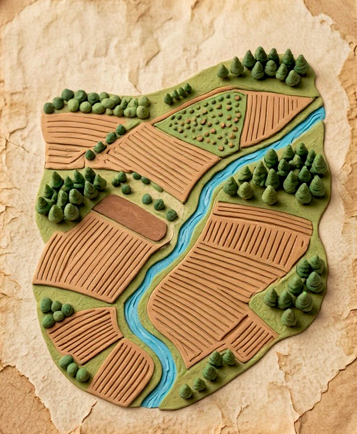

Подготавливаем ферму...


0%

Здесь пока пусто.
Скоро тут будут расти прекрасные фруктовые деревья! 🍎
Здесь пока пусто.
Скоро здесь будут жить ваши животные! 🐑
Название: —
Лидер: —
Участников: 0
Уровень: 0
Очки: 0